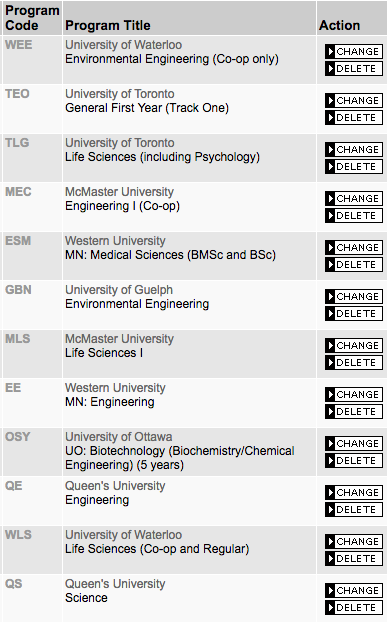

Did I take a wrong turn somewhere? Misread a sign?
Tracing my steps back a few years…
If you had asked Grade 12 Kate what she wanted to do with her life, you would’ve been met with a blank stare, followed by a stammering and uncertain response of “maybe engineering or science…???” At that time, university applications were staring me in the face, mocking me for my inability to make a decision. I’ve posted a screenshot of all the programs and schools I applied to below - though to give my younger self some credit, I was going to end up in one of two camps.

Apart from the ridiculous number of programs I applied to (I had no self confidence and thought I couldn’t get in anywhere),
I did try to pick programs that would keep as many doors open as possible (note: all the eng programs I applied for, except UW,
had general first year). I was trying to buy myself time to understand my interests and goals better - I figured that a more
lasting decision could be made further down the line.
However, in the end, I did settle on Environmental Engineering at the University of Waterloo.
...
...
...
Now wait a second. Environmental Engineering??
Examining the reasons above, there were things I overlooked. Not once did I consider my strengths and weaknesses, nor did I give sufficient heft to interests - I told myself that I could learn to like any subject.
Clearly, I dun goofed.
However, looking back, despite the turns and bumps in the road, this whole experience was one of the best lessons life has ever taught me. Would I go back and change a second of it? Definitely not.
But what happened in those two years? I finished first year (twice), took on Europe solo, met tons of incredible people, and made countless memories.
Going into a bit more detail, after 1A and my first co-op term, the seeds of doubt had started to take hold in the back of my mind. Towards the end of my 1B term in EnvE, I had entertained the idea of pursuing a minor in biophysics. I wanted more theoretical physics and math in my university education (words not uttered by many, I’m sure) and I wasn’t going to get that with the regular EnvE curriculum (which to give it full credit, is still an absolutely outstanding program). After finishing first year, I was certain - I was not in the right place.
Fortunately, in the following work term, I had time to really reflect on myself and my values, what I wanted in my future, and to hear the advice of others. I did an absurdly large number of career and personality tests (which didn’t really help), and exhaustively analyzed all my options. I pondered the ideas of going into the sciences (biophysics or biology), staying in engineering (electrical or mechanical or mechatronics), or even switching to another university altogether.
In the end, I decided the most feasible choice was to stay at Waterloo, albeit in another program. Many decision matrices and lists later, I would end up emailing ECE and submitting my transfer request form, fingers crossed and eagerly awaiting a response. It was like waiting for university offers all over again!
But to briefly summarize my decision process for making the switch from EE to EE (the other one!)
At the end of the day, am I confident that I’m in the right place? Oh hell no. I have my doubts everyday on whether I’m cut out for and whether I’m survive in Electrical Engineering. Despite this, the past 2 years have certainly taught me that it’s perfectly okay to not have it figured out, and that it’s even better to stay just beyond the borders of my comfort zone.
So see you on the other side.